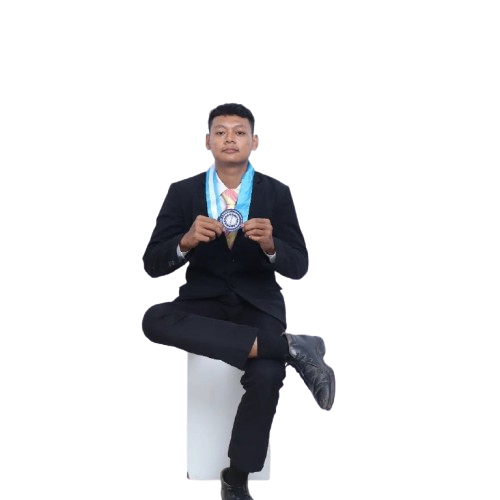
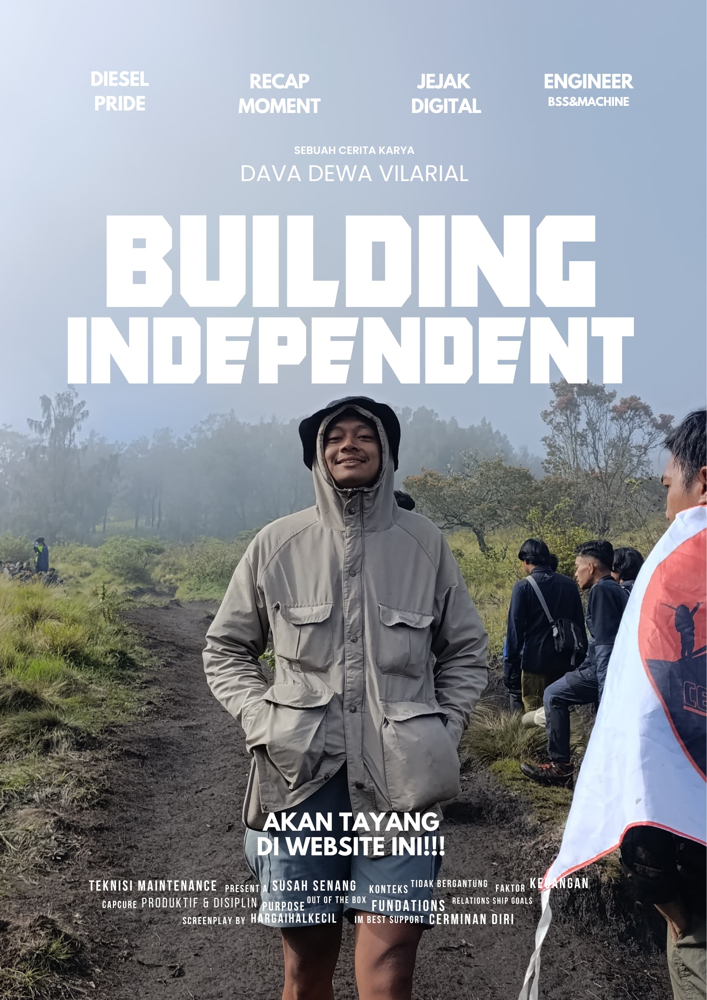

MEKANIK DIESEL · SPESIALIS INJECTION PUMP
Saya Dava Dewa Vilarial, lulusan SMK jurusan Teknik Kendaraan Ringan Otomotif (TKRO) dengan pengalaman di bidang mekanik otomotif, spesialis mesin diesel, serta instalasi dan commissioning jaringan telekomunikasi. Memiliki kemampuan dalam servis dan pemeriksaan kendaraan, operasional kasir, pengoperasian sistem komputer, serta Finance Administration. Terbiasa bekerja secara teliti, disiplin, adaptif, dan bertanggung jawab.

APA YANG SAYA KERJAKAN
Saya berangkat dari lantai bengkel dan ruang kalibrasi, saya terbiasa menangani servis berkala kendaraan, kelistrikan dan kaki-kaki, hingga overhaul serta kalibrasi nozzle diesel (Rotary & konvensional) untuk berbagai mesin dan kendaraan berat. Pengalaman itu berlanjut ke instalasi, commissioning, connecting jaringan telekomunikasi, bekerja di atas ketinggian, dan menjaga kesiapan alat kerja, serta mengelola transaksi kasir, sistem Astra, dan rekap keuangan, serta melakukan penjualan produk.
KOMPETENSI
PERJALANAN PROFESIONAL
Instalasi / Commissioning
2025 – 2026
Pekerjaan Site Acquisition (SITAC), Civil, Mechanical, and Electrical (CME), Working at heights, instalasi microwave radio, hingga pembongkaran (dismantle) perangkat jaringan lama.
Kepala Mekanik
2024 – 2025
General Contractor, Infrastructure & Engineering Support Bergerak di bidang jasa konstruksi, pengadaan, dan dukungan operasional proyek lapangan. Terlibat langsung dalam eksekusi pekerjaan teknis, koordinasi tim lapangan, pengendalian mutu (quality control), serta penerapan standar keselamatan kerja guna memastikan penyelesaian proyek tepat waktu dan sesuai spesifikasi.
Mekanik (Pekerja Lepas)
2022 – 2025
Diesel Fuel Injection Specialist — Bosch Pump & Nozzle Calibration Bergerak di bidang jasa perbaikan, penyetelan, dan kalibrasi komponen sistem bahan bakar diesel (bosch pump / injection pump dan nozzle/injector). Terlibat langsung dalam diagnosa kerusakan suplai bahan bakar, pembongkaran dan perakitan pompa injeksi, kalibrasi tekanan pengabutan menggunakan mesin test bench, serta pengujian performa guna memastikan pembakaran mesin diesel kembali presisi, bertenaga, dan efisien.
Mekanik Spesialis Injection Pump (Magang)
2023 – 2024
Diesel Engine Specialist, Repair & Maintenance Bergerak di bidang jasa perbaikan, kalibrasi, dan perawatan khusus mesin diesel di wilayah Kediri. Terlibat langsung dalam diagnosa kerusakan sistem bahan bakar, perbaikan injection pump dan nozzle/injector, overhaul mesin diesel, serta pengujian performa guna memastikan tenaga mesin kembali optimal, irit bahan bakar, dan andal untuk operasional berat.
Pelatihan Mesin Diesel
2024
Technical Training, Skill Development & Operational Readiness Mengikuti program pelatihan dan pembekalan kompetensi teknis di Training Center PT Dizzo Indonesia Jaya. Fokus pada penguasaan prosedur operasional standar (SOP), praktik kerja lapangan, kedisiplinan, serta kesiapan teknis guna mendukung standar kerja industri yang aman dan terukur.
Mekanik & Administrasi Operasional
2026
Automotive Retail, Quick Service & Vehicle Maintenance Jaringan ritel otomotif resmi di bawah naungan PT Astra Otoparts Tbk. yang bergerak di bidang penyediaan suku cadang fast-moving serta layanan perawatan cepat kendaraan. Terlibat langsung dalam inspeksi teknis kendaraan, penggantian aki, oli, dan komponen kaki-kaki (shock absorber), serta pelayanan pelanggan sesuai standar mutu dan SOP grup Astra.
LATAR BELAKANG
Teknik Kendaraan Ringan Otomotif (TKRO) — 2021 – 2024
Nilai Akhir: 80,95
PT Dizzo Indonesia Jaya — 2024
Sistem kerja mesin diesel, perawatan mesin, dan teknik troubleshooting.
PUNYA PELUANG KERJA SAMA?
Kotak masuk saya selalu terbuka. Kalau ada pertanyaan atau tawaran kerja, silakan hubungi saya, saya akan membalas secepatnya.
